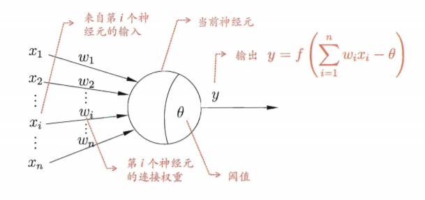
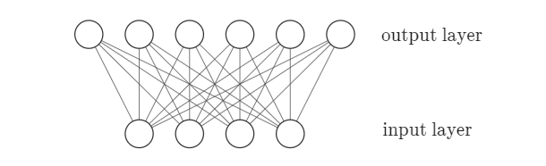
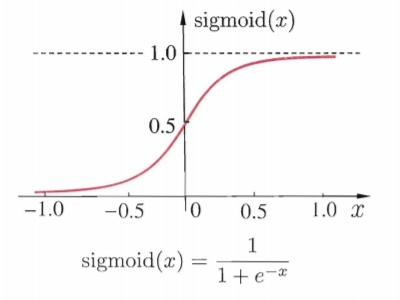

1. nn
$\global\def\d{\mathrm{d}} $ $\global\def\p{\partial} $ $\global\def\f{\frac} $ $\global\def\g{\operatorname{grad}}$
1. 发展历史
(1). 神经元模型 $(\text{neuron})$

此模型中，神经元收到 $n$ 个其他神经元传递过来的输入信号，通过权重连接传递、将总输入与神经元阈值比较，然后通过激活函数输出。局限:
- 理想的激活函数 $\mathrm{sgn}(x)$ 不连续
- 无法学习
(2). 感知机模型 $(\text{perceptron})$
感知机由两层神经元组成，输入层接收外界信号传递给输出层，输出层是

感知机通过 $\Delta w_i=\eta(y-\hat{y})x_i$ 简单的进行学习。
感知机本质上是线性模型，对于二分类任务，如果数据线性不可分 (如异或问题)，效果就会很差。
(3). 多层感知机 $(\text{MLP})$
由于感知机模型的局限性，以及多层感知机没有有效的学习算法，神经网络的发展陷入瓶颈。直到

2. 反向传播算法
(1). 基本推导
假设 $D=\lbrace (\bm{x},\bm{y})\rbrace $ 是只有一个元素的数据集，通过它训练下图的神经网络。
首先随机初始化网络的参数，通过 $(\bm{x},\bm{y})$ 前向传播计算得到 $\bm{x}$、$\bm{h}$ 和 $\bm{\hat{y}}$ 的值。
其中 $\beta_1=\bm{w_1^\mathrm{T}}\bm{h}+b_{y_1}$, $\alpha_2=\bm{v_2^\mathrm{T}}\bm{x}+b_{h_2}$。设训练的目标函数为均方误差
以 $y_1\to h_2$ 为例执行计算，可得:
$\text{sigmoid}$ 函数有一个很好的性质: $f'(x)=f(x)\cdot (1-f(x))$，因此有
再由 $\small\displaystyle\f{\p\beta_1}{\p w_{12}}=h_2$，可得 $w_{12}$ 的更新公式 $\Delta w_{12}=\eta g_1 h_2$，同理有 $\Delta b_{y_1}=\eta g_1$
如此往复，更新完输出层到隐层的 $8$ 个参数后，利用计算结果，向后传播。以 $h_2\to x_1$ 为例:
和上述计算过程类似，$\small\dfrac{\p \alpha_2}{\p v_{11}}=x_1$，$\small\dfrac{\p h_2}{\p \alpha_2}$ 用到 $\text{sigmoid}$ 的性质，而 $\small\displaystyle\f{\p C}{\p h_2}$ 用到了前面的计算过程
最后可得结果
如此往复，当输入层到隐层之间的参数都被更新，
(2). 直观解释
数学推导上，反向传播过程就是对一个特殊函数结构通过
实际上，对它的理解可以更加直观一些。
- 假设原始数据 $\bm{y}=(1, 0.2)^\mathrm{T}$，而经过前向传播得到的 $\hat{\bm{y}}=(0.1, 0.1)^\mathrm{T}$，
因此，我们“ 期待 $\hat{y_1},\ \hat{y_2}$ 增大 ”(i.e. $\displaystyle\small\f{\p C}{\p \hat{y_1}} < 0$)
(由梯度的性质，增大的值和 $y_i-\hat{y_i}$ 成正比) - 把目光聚焦于 $\hat{y_1}$ 上 (假设以 $\hat{y_1}(\bm{w_{1}}, b, \bm{h})$ 为目标函数)，要增大 $\hat{y_1}$，可以增大 $w_{1i}$、增大 $b_{y_1}$ 或 增大 $h_i$. 先分别求对 $w_{1i}、b$ 的偏导，进行梯度下降
- 然后求 $\displaystyle\small\f{\p\hat{y_1}}{\p h_i}$，这个值的含义是 “增大 $\hat{y_1}$ 对 $h_i$ 变化的期待”
- 再考虑 $\hat{y_2}$，重复上述过程。最后，对于每个隐层的 $h_i$，把输出层 $\bm{\hat{y}}$ 对它的期待的改变累加，就得到了一串 $h_i$ 的变化量。这里就体现了
BP 算法的反向 "传播" 的理念了，通过chain rule 和输出层的变化量，得到了隐层的变化量。
(3). 梯度下降的方式
上面的例子假设数据集的基数为
- 批量梯度下降 (
BGD ): 理想的梯度下降方式，对数据集中每个输入计算误差，将所有误差累加取平均作为最终的代价函数，并以此更新参数 - 全数据集计算代价函数，更好地代表总体，算出极小值后，保证梯度为 $0$
- 对每个参数求偏导需要遍历数据集，计算过程很慢
- 容易陷入局部极小值点
- 随机梯度下降 (
stochastic, SGD ): 每计算一个样本的前向传播后，就计算它的代价，并以之为目标函数更新参数 - 速度快，随机性有利于跳出局部极小值点
- 准确度下降，解空间搜索比较盲目，但大体上是最优方向
- 若收敛，
loss 呈现上下震荡、但总体上下降的趋势 - 小批量梯度下降 (
Mini-BGD ):SGD 和BGD 的折中，把数据集随机分成若干mini batch ，每次迭代使用batch size 个样本进行更新 - 合理地增大
batch 可充分利用GPU ，提高内存利用率，减小loss 的震荡 - 小
batch 引入随机性，尽管计算速度快，但同样可能造成收敛速度慢甚至不收敛